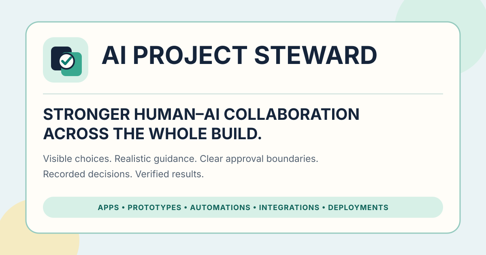

What it does
AI Project Steward translates goals into practical implementation while keeping consequential choices visible, preserving approval boundaries, recording accepted decisions, and verifying the working result.
Applied Judgment System · Apps, prototypes, automations, and integrations
Your AI collaborator for human-led project builds. It keeps consequential choices visible, preserves approval boundaries, records accepted decisions, and verifies the working result.
Install it as a portable skill and use it on its own, or after the judgment loop when earlier context and decisions should carry into implementation.

What it does
AI Project Steward translates goals into practical implementation while keeping consequential choices visible, preserving approval boundaries, recording accepted decisions, and verifying the working result.
“Build a customer-health workflow from our CRM data and send Slack alerts.”
The agent compares realistic approaches, recommends the simplest reliable one, explains data and maintenance trade-offs, asks before connecting systems, records the decision, and tests the real alert scenarios.
Start directly with AI Project Steward for any AI-assisted technical build. When earlier judgment work already exists, use it after Test Drive to carry the brief, critique, deliberation, and evidence into implementation. The four-part loop remains complete on its own.
Download the packaged skill for import into a skill-capable platform, or use the repository instructions for a manual installation.